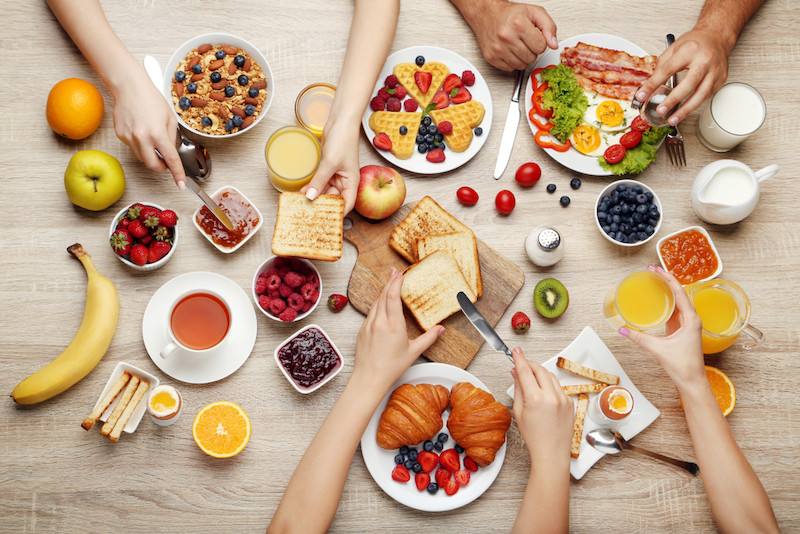
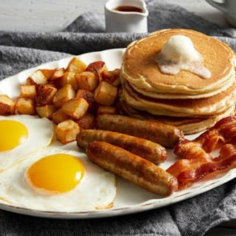
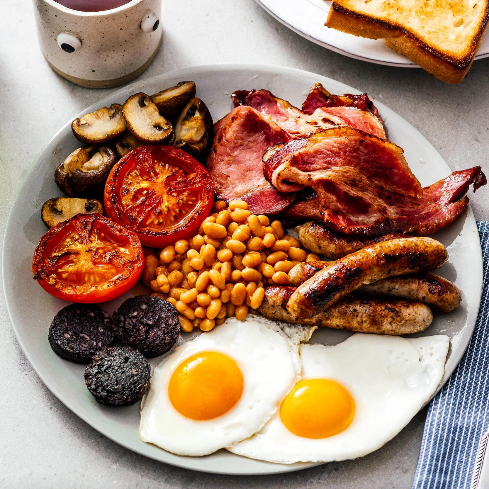
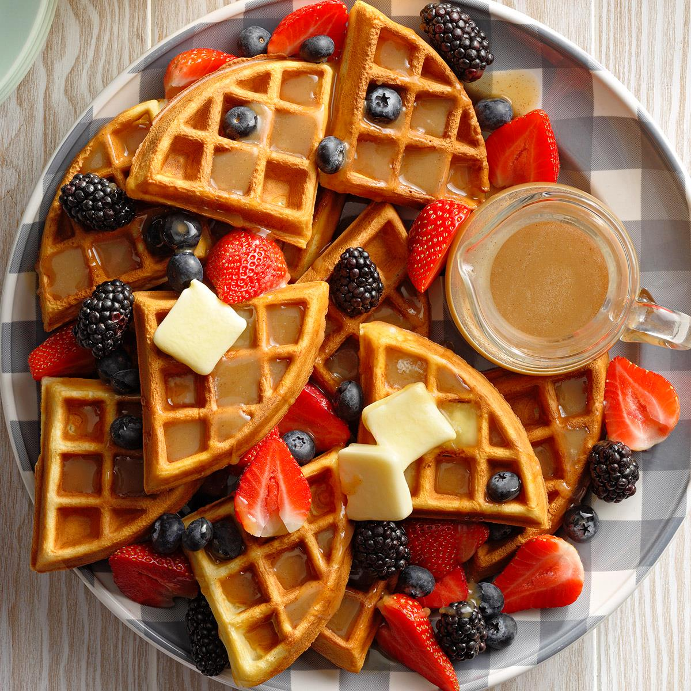
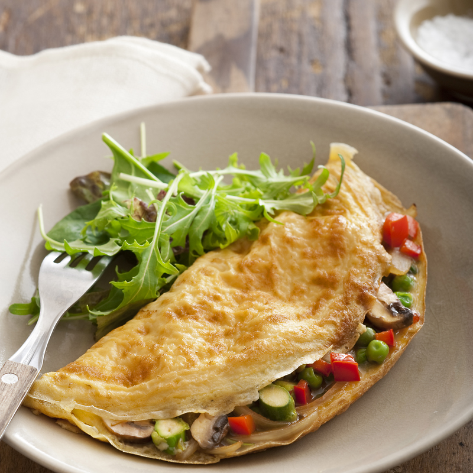

A perfect day doesn't start without a perfect breakfast
and it's our mission to serve tasty and healthy breakfast to you.

Our Famous Dishes

American Breakfast
This is a heavy breakfast that consists of two eggs,
bacon, sausages, sliced potates, pancakes, and a cup of coffee

English Breakfast
A full English Breakfast menu may consist of 2 eggs,
fish, black pudding, hot meat, baked beans, grilled tomatoes, sausages,
bacon, sauteed mushrooms, fresh fruits, toast, and beverages

Waffles
This fluffy waffles filled with syrup and fresh fruits
is famous and a favorite among kids.

Omelette
This omelette consists of different nutritious
vegetables which is perfect choice for vegetarians.
Never work before breakfast, if you have to work before
breakfast, eat your breakfast first.